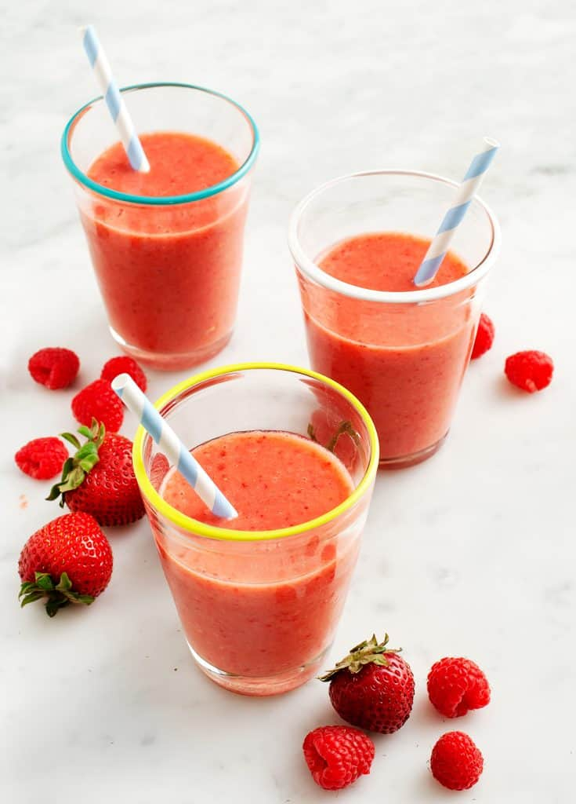

Strawberry Banana Smoothie
210–300 calories

How to Make a Smoothie
“I walked outside and felt like I was swimming,” is what Jack said the other day as I picked him up from the airport, fresh off a flight from LA. It’s humid here, to say the least, and the air is thick. It’s the kind of heat that sort of takes your breath away as soon as you walk out the door. But I’m not complaining, it always takes just a few weeks for the body to acclimate to our summer temps. Hydration is the key. Eight glasses of water (don’t know who recommended that) is just not enough, so I’ve been on a smoothie kick lately, and this refreshing strawberry banana smoothie recipe is my new favorite.
- Fill your blender with fruit, almond milk, ice, and a little sweetener if you like.
- Blend!
-
If your smoothie is too tart, add a little more honey or maple syrup
Smoothie Recipe Tips
- For a thick smoothie, use frozen fruit.
- For a thicker smoothie, start with less almond milk, you can always add more as you blend..
Strawberry Banana Smoothie Recipe Variations
I like to make this smoothie with a mix of strawberries and raspberries, but if you prefer to go fully in the strawberry banana direction, use 2 cups strawberries instead of strawberries and raspberries, and use a full banana instead of a half. This strawberry banana smoothie recipe works with fresh or frozen fruit, just cut back on the ice if you opt for frozen fruit. I encourage you to try adding the optional basil or mint – they add a lovely freshness to this drink.